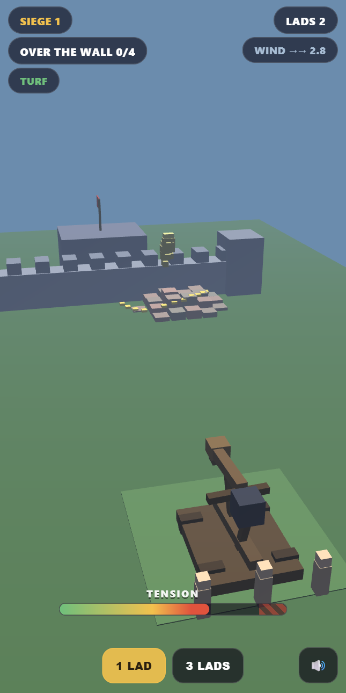

Actual gameplayThe machine is the mistake
Hold to wind the windlass. The ratchet clicks faster, the rope creaks, and the frame starts to lift at the front. Drag while you hold to swing the turntable and set the arc, then let go and a ragdoll goes over the wall — or into it. Wind too far and the rope snaps: the arm flails, the crew scatter, and your lad is dumped three metres in front of the machine, where he stands up and looks at you.
Why it works: most artillery games hand you three sliders and a clean parabola. Here there is no power slider — there is a machine, simulated, and the spread comes out of its real state: how wound the rope is, how far the frame has sunk into the mud, which way the wind is pushing. The aiming preview is an ellipse of doubt, not a dotted line, and it is computed by the same code that flies the lad, so it can be vague but it can never lie to you.